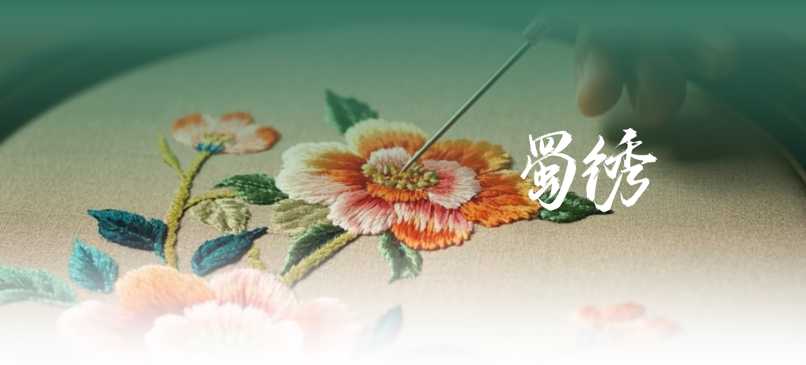

Exquisite crafts, teas, and treasures from the Land of Abundance
One of China's four great embroidery traditions, Shu Embroidery dates back over 2,000 years. Known for its meticulous needlework, vivid colors, and lifelike designs, master embroiderers use over 130 different stitches to create stunning works depicting pandas, landscapes, flowers, and birds on silk fabric.
Shu Brocade is the most celebrated silk brocade in Chinese history, once used as currency and tribute to emperors. Woven on traditional wooden looms using techniques passed down through 2,000 years, it features intricate geometric patterns, floral motifs, and vibrant color combinations.
Grown on the misty slopes of Mount Mengding in Ya'an, Mengding Ganlu (Sweet Dew) is one of China's ten most famous teas. Cultivated since the Western Han Dynasty, this premium green tea is hand-picked before the Qingming Festival and carefully processed to produce a sweet, delicate flavor with a lingering floral aroma.
Zhuyeqing is a distinctive green tea from Mount Emei, where tea bushes grow among ancient bamboo forests at high altitude. The flat, needle-shaped leaves are deep green, resembling bamboo leaves, and brew into a clear, bright green liquor with a fresh, vegetal taste and subtle sweetness.
Cold-pressed from premium Sichuan peppercorns, this aromatic oil captures the essence of the province's signature numbing flavor. Used as a finishing oil for dumplings, noodles, and stir-fries, it adds an incomparable fragrance and tingling sensation that defines authentic Sichuan cuisine.
Known as the "soul of Sichuan cuisine," Pixian Doubanjiang is a fermented chili bean paste from Pixian County. Aged for up to three years in open earthenware jars exposed to the sun and wind, this rich, complex paste develops deep umami flavors that form the foundation of countless Sichuan dishes.